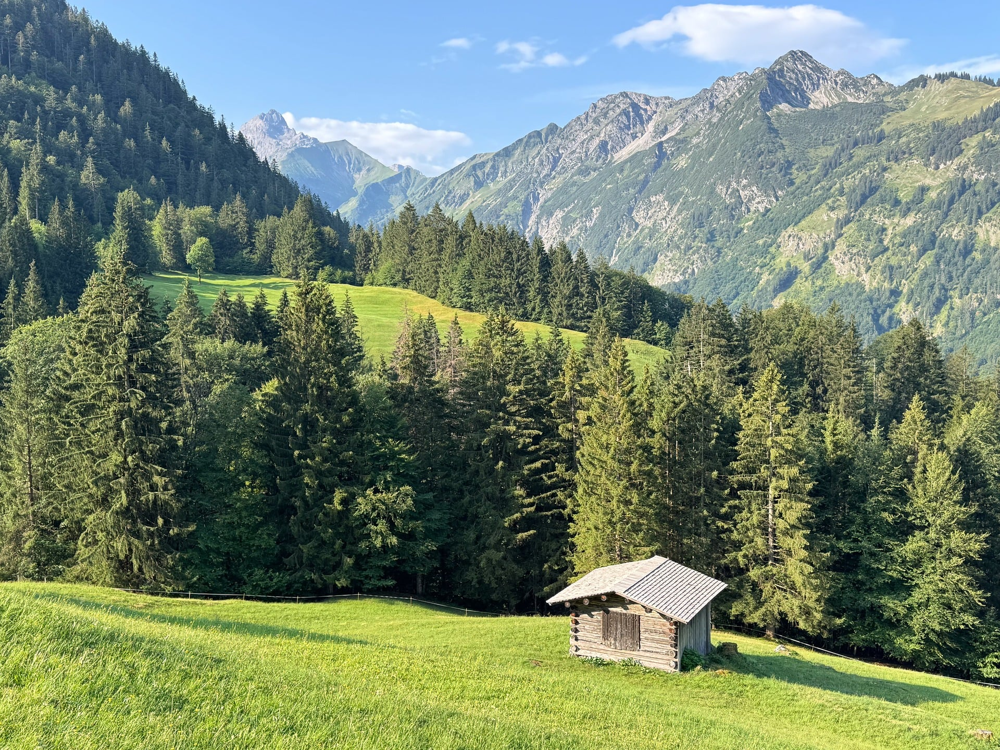
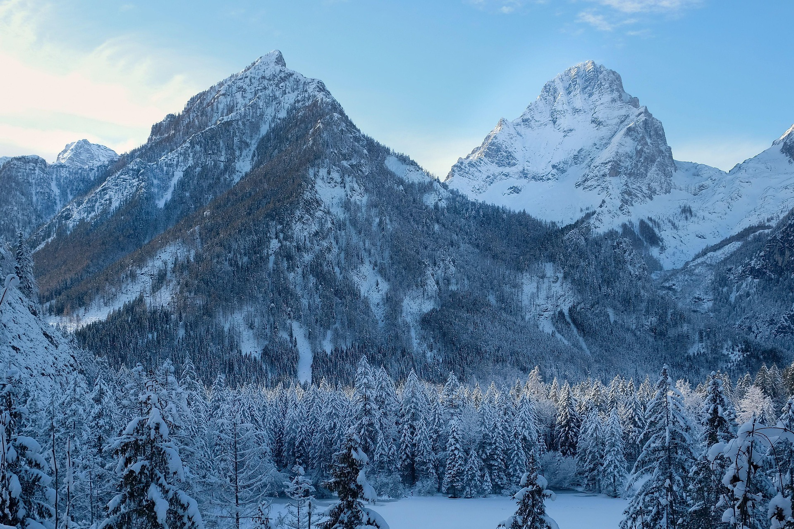
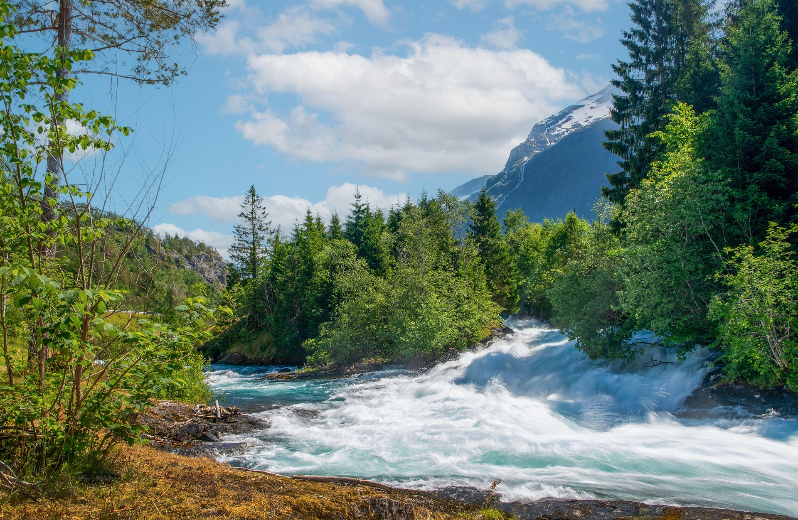

Informações
Abaixo apresentamos os principais dados estatísticos e geográficos da nossa região, bem como alguns factos históricos que tornam esta terra tão especial.
Dados da região
| Demografia | População | Aprox. 3 000 hab. |
|---|---|---|
| Freguesias | Cernache, Nesperal e Palhais | |
| Geografia | Área | 72,06 km² |
| Concelho | Sertã | |
| Distrito | Castelo Branco | |
| Website | www.cm-serta.pt | |


5 Curiosidades
- Berço de um Herói: É a terra natal de D. Nuno Álvares Pereira, o Santo Condestável.
- A origem do "Bonjardim": Originalmente chamava-se apenas "Cernache".
- Elevação a Vila: Foi elevada à categoria de vila em agosto de 1955.
- Seminário das Missões: É a sede do Real Colégio das Missões Ultramarinas.
- Gastronomia Rica: A vila está ligada à tradição gastronómica da região da Sertã.
